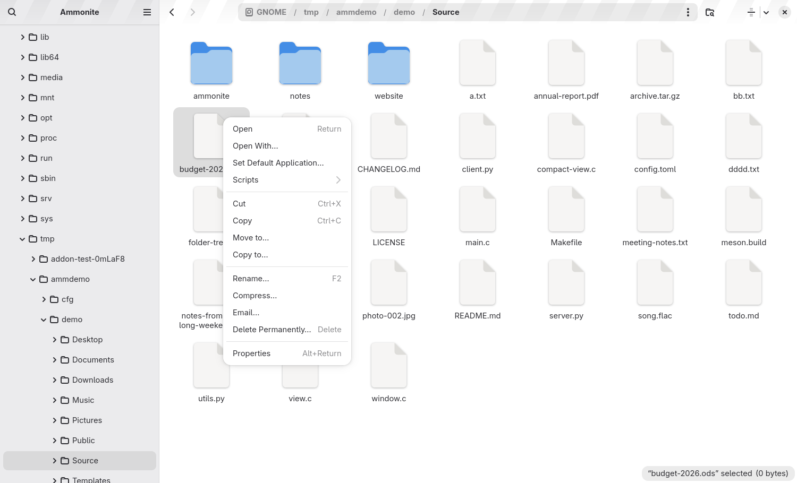

Scripts add your own actions to Ammonite's right-click menu. A script is just an executable file in a folder: write it in shell, Python or anything else you can run, and Ammonite hands it the files you have selected.

Make backup copy with these contents:
#!/bin/bash
for f in "$@"; do
cp -- "$f" "$f.bak"
donechmod +x "Make backup copy".bak sibling.The menu updates by itself when you add, remove or rename scripts. There is no need to restart Ammonite.
| How you run Ammonite | Scripts folder |
|---|---|
| Flatpak | ~/.local/share/ammonite/scripts |
| Installed normally | $XDG_DATA_HOME/ammonite/scripts, which is normally ~/.local/share/ammonite/scripts |
The folder is created for you. It is separate from Nautilus' ~/.local/share/nautilus/scripts and Caja's
~/.config/caja/scripts, so nothing is picked up from those automatically. See Coming from Caja.
chmod +x your script.Make backup copy shows as Make backup copy. Pick a name that reads well as a menu item, and don't add an extension unless you want it shown.10 Resize, 20 Backup) to control the order.Images containing Resize to 50% gives you Scripts → Images → Resize to 50%, to any depth. A folder with no usable scripts inside it is left out.#!/bin/bash or #!/usr/bin/env python3.The selected files are passed as command-line arguments, one per file, in the order Ammonite lists them.
| Situation | What the arguments look like |
|---|---|
| Selected file is inside the folder you are viewing | The bare name, for example photo-001.jpg |
| Selected file is somewhere else, for example in search results | The full path, for example /home/you/Pictures/photo-001.jpg |
| Any selected item is not a local file (network share, trash, recent files…) | No arguments at all. Use the environment variables instead, which carry URIs. |
Always quote "$@" and each file variable ("$f"). File names can contain spaces, quotes and other characters that would otherwise be split by the shell.
Ammonite sets three environment variables for the script. They are only set while the script is being started, and are not present anywhere else.
| Variable | Contents |
|---|---|
AMMONITE_SCRIPT_SELECTED_FILE_PATHS |
The selected files as full local paths, separated by newlines, with a newline after the last one. If any selected item is not a local file, this is an empty string. |
AMMONITE_SCRIPT_SELECTED_URIS |
The selected files as URIs, separated by newlines. This works for every kind of location, local or remote. |
AMMONITE_SCRIPT_CURRENT_URI |
The URI of the folder being viewed, for example file:///home/you/Documents or smb://server/share. |
Because paths are separated by newlines, read them line by line. In bash:
while IFS= read -r path; do
[ -n "$path" ] || continue
echo "Selected: $path"
done <<< "$AMMONITE_SCRIPT_SELECTED_FILE_PATHS"A file name that itself contains a newline cannot be represented this way. Use the arguments for those.
For locations that are not local (a network share, say), work from the URIs with tools that understand them, such as gio copy, gio cat and gio open.
A script can be given its own shortcut. Create the file scripts-accels in Ammonite's configuration folder
and add one line per shortcut, in the form ACCELERATOR script name:
# ~/.config/ammonite/scripts-accels
<Control>F5 Make backup copy
<Alt>r Resize to 50%<Control>, <Shift>, <Alt>) followed by a key name.Under Flatpak the file is ~/.var/app/org.ammonite.Ammonite/config/ammonite/scripts-accels.
notify-send "Done" for a notification, or zenity --info --text="…" / zenity --text-info for a dialog.exec >> ~/ammonite-script.log 2>&1 near the top of the script.exec gnome-terminal -- bash -c '…'.
The Flatpak build can see your files (it has access to your home folder and other disks), and it reads the same scripts folder.
However, scripts run inside Ammonite's sandbox. They can use the tools that are installed in the Flatpak runtime
(bash, cp, mv, find, python3 …), but not programs that are installed only on
your host system, such as ImageMagick or ffmpeg.
If a script needs a host tool, either install the Ammonite package natively, or have the script call the tool through a Flatpak that provides it.
Copy the paths of the selected files to the clipboard (needs wl-copy on Wayland, or xclip on X11):
#!/bin/bash
printf '%s' "$AMMONITE_SCRIPT_SELECTED_FILE_PATHS" | wl-copyShow what Ammonite passes to a script, which is useful when you are developing your own:
#!/bin/bash
{
echo "Current folder: $AMMONITE_SCRIPT_CURRENT_URI"
echo
echo "Selected paths:"
echo "$AMMONITE_SCRIPT_SELECTED_FILE_PATHS"
echo
echo "Arguments: $#"
} | zenity --text-info --title="Script environment"Resize images to half size, saved beside the originals. Put this in a sub-folder called Images (needs ImageMagick):
#!/bin/bash
for f in "$@"; do
convert "$f" -resize 50% "${f%.*}-small.${f##*.}"
done
notify-send "Resized $# image(s)"Make a zip of the selection named after the folder you are in:
#!/bin/bash
[ $# -gt 0 ] || { notify-send "Select something first"; exit 1; }
zip -r "../$(basename "$PWD").zip" -- "$@"
notify-send "Zip created" "$(basename "$PWD").zip"A Python script that counts lines in the selected text files:
#!/usr/bin/env python3
import subprocess, sys
total = 0
for name in sys.argv[1:]:
try:
with open(name, errors="replace") as f:
total += sum(1 for _ in f)
except OSError:
pass
subprocess.run(["notify-send", "Line count", str(total)])Ammonite's scripts follow the same model as Caja's and Nautilus', so most scripts work unchanged. To move yours over:
~/.config/caja/scripts, and for Nautilus ~/.local/share/nautilus/scripts.| Caja | Nautilus | Ammonite |
|---|---|---|
CAJA_SCRIPT_SELECTED_FILE_PATHS | NAUTILUS_SCRIPT_SELECTED_FILE_PATHS | AMMONITE_SCRIPT_SELECTED_FILE_PATHS |
CAJA_SCRIPT_SELECTED_URIS | NAUTILUS_SCRIPT_SELECTED_URIS | AMMONITE_SCRIPT_SELECTED_URIS |
CAJA_SCRIPT_CURRENT_URI | NAUTILUS_SCRIPT_CURRENT_URI | AMMONITE_SCRIPT_CURRENT_URI |
sed -i 's/CAJA_SCRIPT_/AMMONITE_SCRIPT_/g; s/NAUTILUS_SCRIPT_/AMMONITE_SCRIPT_/g' *
scripts-accels. See Keyboard shortcuts.| Problem | Check |
|---|---|
| The script doesn't appear | Is it executable (chmod +x)? Is it directly in the scripts folder, or in a sub-folder that has at least one usable script? Is its name free of a leading dot? Are there more than 30 entries in that folder? |
| Nothing seems to happen | The output is not shown. Run the script in a terminal with the same arguments, or add logging as described under Output and errors. |
| "Exec format error" | The first line is missing or wrong. Start the file with #!/bin/bash or another interpreter. |
| The script gets no arguments | One of the selected items is not a local file. Read AMMONITE_SCRIPT_SELECTED_URIS instead. |
| Files with spaces break | Quote every variable: "$f", "$@". |
| A command is "not found" (Flatpak) | Scripts run inside the sandbox. See Running under Flatpak. |
| The shortcut doesn't work | The name after the accelerator must match the script's file name exactly, and Ammonite must be restarted after editing scripts-accels. |
Scripting, along with the Caja-style compact layout, was suggested by @vermaden on X. Thank you.